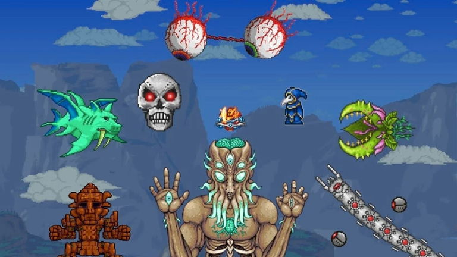
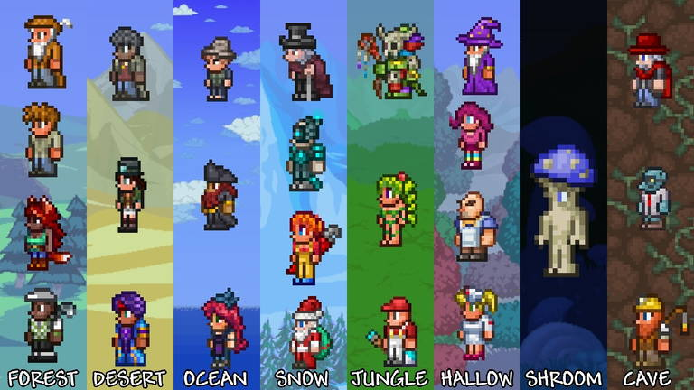

Información del Juego
Terraria es un videojuego de acción, aventura y de sandbox producido de forma independiente por el estudio Re-Logic. Tiene características tales como la exploración, la artesanía, la construcción de estructuras y el combate.
Se lanzó el 16 de mayo de 2011. Hasta la fecha lleva más de 45 000 000 de copias vendidas entre sus diversas plataformas.
Se estima que el juego vendió alrededor de 50 000 copias el día del lanzamiento, con más de 17 000 jugadores en línea al mismo tiempo. En asociación con la productora 505 Games el juego fue lanzado para las plataformas Xbox 360, PlayStation 3 y PlayStation Vita, pero estas se dejaron de actualizar. Sus ventas totales se estiman alrededor de un millón de copias. El juego también fue lanzado para los sistemas Android e iOS alcanzando en estas plataformas 8,9 millones de copias descargadas.
Mecánica de juego
Terraria es un videojuego de mundo abierto en 2D. Contiene elementos de construcción, exploración, aventura y combate, muy similar a juegos clásicos de la consola Super NES, como por ejemplo la serie Metroid, y a otras entregas no tan antiguas como Minecraft.

El juego comienza en un mundo creado de forma aleatoria. El usuario puede personalizar a su personaje; cambiando el estilo de su pelo, camisa, pantalones, así como el color de los mismos, su género, entre otras personalizaciones que permite el juego. El jugador tiene a su disposición herramientas de distintos tipos, las cuales sirven para moldear el mundo y trabajar los recursos que el jugador encuentre (tales como minerales). Así mismo, el jugador inicia con una cantidad limitada de vida y puntos de magia, los cuales puede incrementar. También es posible mejorar al personaje incrementando su ataque, defensa, velocidad, entre otros, usando distintos objetos obtenibles en el transcurso de la aventura. El jugador puede utilizar los materiales y recursos que va encontrando para crear nuevos objetos, tales como armas, armaduras, pociones, etc., siendo los objetos más avanzados los más difíciles de crear.
Enemigos
El jugador puede encontrar una gran variedad de enemigos en Terraria, los cuales aparecen dependiendo de diversos factores que incluye la hora, el lugar, eventos especiales e interacciones que hace el personaje. El jugador puede pelear contra sus enemigos con diversas armas como espadas, arcos, armas de fuego, armas mágicas, etc. También se puede batallar con jefes, los cuales dan objetos importantes al ser derrotados y son sumamente difíciles de matar.
NPCs
Completando diferentes requisitos (por ejemplo derrotar a un jefe u obtener objetos específicos) el jugador puede atraer NPC los cuales ocuparán una casa siempre y cuando estas cumplan con los requerimientos necesarios. El juego posee un sistema de comercio en forma de monedas, en el cual el jugador puede comprar o vender diversos objetos a los NPC. Las monedas se consiguen matando monstruos, destruyendo jarrones, encontrando tesoros o vendiendo objetos a los NPC.
Hay un total de 31 NPC, de los cuales 28 necesitan una casa en la que pueda vivir. Los otros 3 no se mudan a las casas. Estos personajes pueden, entre otras cosas, curar, atacar monstruos, así como vender artículos. Los NPC también aparecerán dependiendo del modo de dificultad, cual se cambia cuando elimines a cierto jefe en cierto momento del juego.
